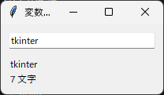
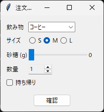

5. 変数クラスと選択ウィジェット
5.1 変数クラスとは
tkinter には、ウィジェットの表示内容と連動する特別な変数（変数クラス）が用意されています。変数クラスの値を変更すると、その変数を指定したウィジェットの表示が自動で更新されます。反対に、ユーザーがウィジェットを操作すると、変数クラスの値が更新されます。
クラス |
値の型 |
主な用途 |
|---|---|---|
|
|
Entry や Label の文字列 |
|
|
Spinbox や Scale の整数値 |
|
|
Scale の小数値 |
|
|
Checkbutton のオンとオフ |
値は get メソッドで取得し、set メソッドで設定します。初期値は value 引数で指定できます。
name = tk.StringVar(value="tkinter")
print(name.get()) # tkinter
name.set("Python")
注釈
変数クラスは、内部で Tcl の変数を使っています。そのため、tk.Tk() でメインウィンドウを作成する前に変数クラスを作成すると、RuntimeError が発生します。
また、Python 側の変数クラスのオブジェクトがどこからも参照されなくなると、Tcl の変数も削除され、ウィジェットとの連動が失われます。変数クラスのオブジェクトは、ウィンドウを表示している間、参照を保持してください。本資料のサンプルコードでは、mainloop を呼び出す main 関数のローカル変数や、クラスの属性として保持しています。
5.2 ウィジェットとの連携
変数クラスをウィジェットに結び付けるには、ウィジェットの種類に応じて次のオプションを使います。
オプション |
使用するウィジェット |
|---|---|
|
Label、Entry、Combobox、Spinbox、Button など、文字列を表示・入力するウィジェット |
|
Checkbutton、Radiobutton、Scale、Progressbar など、値を選択・表示するウィジェット |
次のサンプルコードでは、Entry と Label に同じ StringVar を指定しています。Entry に入力すると、同じ文字列が Label にも表示されます。
1"""第 5 章: 変数クラス (StringVar) と trace_add のサンプルです。
2
3Entry に入力した文字列が、Label にそのまま反映されます。
4入力のたびに文字数も更新します。
5"""
6
7import tkinter as tk
8from tkinter import ttk
9
10
11def main() -> None:
12 """入力内容と文字数をリアルタイムに表示するウィンドウを表示します。"""
13 root = tk.Tk()
14 root.title("変数クラスのサンプル")
15
16 # 変数クラスは Tk オブジェクトを作成した後に作ります
17 name = tk.StringVar(value="tkinter")
18 length_message = tk.StringVar()
19
20 frame = ttk.Frame(root, padding=10)
21 frame.pack(fill="both", expand=True)
22
23 # Entry と Label が同じ StringVar を共有します
24 ttk.Entry(frame, textvariable=name, width=30).pack(fill="x")
25 ttk.Label(frame, textvariable=name).pack(anchor="w", pady=(10, 0))
26 ttk.Label(frame, textvariable=length_message).pack(anchor="w")
27
28 def update_length(*args: object) -> None:
29 """name の値が変わるたびに呼ばれ、文字数の表示を更新します。
30
31 trace_add から渡される 3 つの引数は使わないため、*args で受け取ります。
32 """
33 length_message.set(f"{len(name.get())} 文字")
34
35 name.trace_add("write", update_length)
36 update_length() # 初期値の文字数を表示します
37
38 root.mainloop()
39
40
41if __name__ == "__main__":
42 main()

実行結果
5.3 値の変更を監視する
変数クラスの trace_add メソッドを使うと、値が変わったときに関数を呼び出せます。前節のサンプルコードでは、この機能を使って文字数の表示を更新しています。
name.trace_add("write", update_length)
最初の引数には、監視する操作を指定します。"write"（値の書き込み）のほか、"read"（値の読み込み）と "unset"（変数の削除）を指定できます。呼び出される関数には、変数名、インデックス、操作の種類の 3 つの引数が渡されます。これらを使わない場合は、サンプルコードのように *args でまとめて受け取ると簡潔に書けます。
trace_add は監視の ID を返します。監視をやめるときは、trace_remove(操作, ID) を呼び出します。
5.4 選択ウィジェットの例
ここからは、決められた選択肢から値を選ぶためのウィジェットを説明します。まず、それらを組み合わせた注文フォームのサンプルコードを示します。確認ボタンで使っている messagebox は、第 7 章で説明します。
1"""第 5 章: 選択用ウィジェットのサンプルです。
2
3Checkbutton, Radiobutton, Combobox, Scale, Spinbox で飲み物を注文する画面を作ります。
4"""
5
6import tkinter as tk
7from tkinter import messagebox, ttk
8
9
10def main() -> None:
11 """注文画面を表示します。"""
12 root = tk.Tk()
13 root.title("注文フォーム")
14
15 size = tk.StringVar(value="M")
16 drink = tk.StringVar(value="コーヒー")
17 sugar = tk.IntVar(value=0)
18 quantity = tk.IntVar(value=1)
19 takeout = tk.BooleanVar(value=False)
20
21 frame = ttk.Frame(root, padding=10)
22 frame.pack(fill="both", expand=True)
23
24 # Combobox: 決められた候補から 1 つを選びます
25 ttk.Label(frame, text="飲み物").grid(row=0, column=0, sticky="w", pady=3)
26 drink_box = ttk.Combobox(
27 frame,
28 textvariable=drink,
29 values=["コーヒー", "紅茶", "緑茶"],
30 state="readonly", # 候補以外の文字列を入力できないようにします
31 width=12,
32 )
33 drink_box.grid(row=0, column=1, sticky="w", pady=3)
34
35 # Radiobutton: 同じ変数を共有するボタンのうち 1 つだけが選ばれます
36 ttk.Label(frame, text="サイズ").grid(row=1, column=0, sticky="w", pady=3)
37 size_frame = ttk.Frame(frame)
38 size_frame.grid(row=1, column=1, sticky="w", pady=3)
39 for value in ["S", "M", "L"]:
40 ttk.Radiobutton(
41 size_frame, text=value, value=value, variable=size
42 ).pack(side="left")
43
44 # Scale: スライダーで数値を選びます
45 ttk.Label(frame, text="砂糖 (g)").grid(row=2, column=0, sticky="w", pady=3)
46 sugar_frame = ttk.Frame(frame)
47 sugar_frame.grid(row=2, column=1, sticky="w", pady=3)
48 ttk.Label(sugar_frame, textvariable=sugar, width=3).pack(side="right")
49
50 def round_sugar(value: str) -> None:
51 """ttk.Scale は小数を返すため、整数に丸めて変数に設定します。"""
52 sugar.set(round(float(value)))
53
54 ttk.Scale(
55 sugar_frame,
56 from_=0,
57 to=10,
58 variable=sugar,
59 command=round_sugar,
60 length=120,
61 ).pack(side="left")
62
63 # Spinbox: 矢印ボタンで数値を増減します
64 ttk.Label(frame, text="数量").grid(row=3, column=0, sticky="w", pady=3)
65 ttk.Spinbox(
66 frame, from_=1, to=10, textvariable=quantity, width=5, state="readonly"
67 ).grid(row=3, column=1, sticky="w", pady=3)
68
69 # Checkbutton: オンとオフを切り替えます
70 ttk.Checkbutton(frame, text="持ち帰り", variable=takeout).grid(
71 row=4, column=0, columnspan=2, sticky="w", pady=3
72 )
73
74 def confirm() -> None:
75 """選択内容をまとめてメッセージボックスに表示します。"""
76 place = "持ち帰り" if takeout.get() else "店内"
77 summary = (
78 f"{drink.get()} ({size.get()} サイズ) x {quantity.get()}\n"
79 f"砂糖 {sugar.get()} g / {place}"
80 )
81 messagebox.showinfo("注文内容", summary)
82
83 ttk.Button(frame, text="確認", command=confirm).grid(
84 row=5, column=0, columnspan=2, pady=(10, 0)
85 )
86
87 root.mainloop()
88
89
90if __name__ == "__main__":
91 main()
ch05_selection_widgets.py をダウンロード

実行結果
5.7 Combobox
Combobox は、ドロップダウンリストから値を選ぶウィジェットです。選択肢は values オプションにリストで指定します。
state="readonly" を指定すると、選択肢以外の文字列を入力できなくなります。指定しない場合は、Entry と同じように自由に文字列を入力できます。選択肢が選ばれたときに処理を実行するには、<<ComboboxSelected>> イベントを bind します（第 6 章参照）。
5.8 Scale と Spinbox
Scale はスライダーで、Spinbox は矢印ボタンで数値を選ぶウィジェットです。範囲は from_ と to オプションで指定します。from は Python の予約語のため、オプション名の末尾に _ が付いています。
ttk.Scale の値は小数になります。整数として扱いたい場合は、サンプルコードの round_sugar 関数のように、command オプションで指定した関数の中で丸めます。この関数には、Scale の現在の値が文字列で渡されます。
Spinbox は、increment オプションで増減の幅を指定できます。また、values オプションに選択肢を指定すると、数値以外の値も選べます。